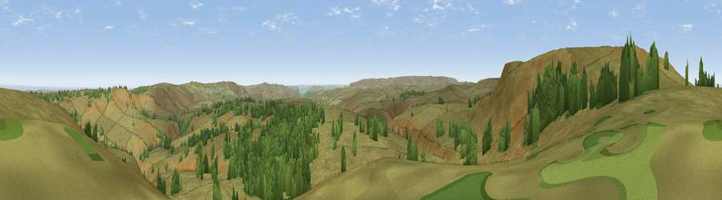

Viewpoint c7927_8275
#11791 in England · top 15% of its area beats it · —Where it is
The exact computed spot (SK 13775 96375). Click the marker for map links.
The view, rendered

A 360° render of this exact spot computed from the terrain model, tree cover and land cover — summer colours, afternoon light, calibrated against photographs of famous viewpoints. Real trees, hedges and buildings will differ in detail.
The panorama
Grey silhouette: terrain skyline in each direction (720 bearings, Earth curvature and refraction included). Dashed green: skyline with trees (+15 m) and buildings (+8 m) as obstacles. Blue strip: how far the ground is visible on each bearing.
Where the view opens
Wedge length = distance to the farthest visible ground on that bearing (vegetation-aware). Rings at 10, 25 and 50 km.
What fills the view
86% grassland · 14% woodland
Angular shares of the visible panorama (visual magnitude), not map area. Landscape diversity 0.18 (0–1 Shannon).
Key numbers
More beautiful places nearby
The staircase of upgrades: each row has a higher view potential than everything closer. Driving times are estimates from straight-line distance, calibrated against real road routing — check an actual route before setting out.
| Place | Direction | Drive | Score |
|---|---|---|---|
| Bleaklow Stones | W · 2 km | ~6 min | 66.7 |
| Viewpoint near Upper Midhope | E · 4 km | ~9 min | 68.8 |
| High Stones | ESE · 5 km | ~12 min | 70.7 |
| Back Tor | SE · 8 km | ~16 min | 71.1 |
| Viewpoint c7795_8393 | SE · 9 km | ~18 min | 71.7 |
| Viewpoint near Thornhill | SE · 10 km | ~19 min | 74.1 |
| Viewpoint near Greenfield | WNW · 15 km | ~27 min | 76.0 |
| Wild Bank | W · 15 km | ~27 min | 76.2 |
53.46394, -1.79398 · source: screening · position refined by local search. Computed location — check access rights before visiting.